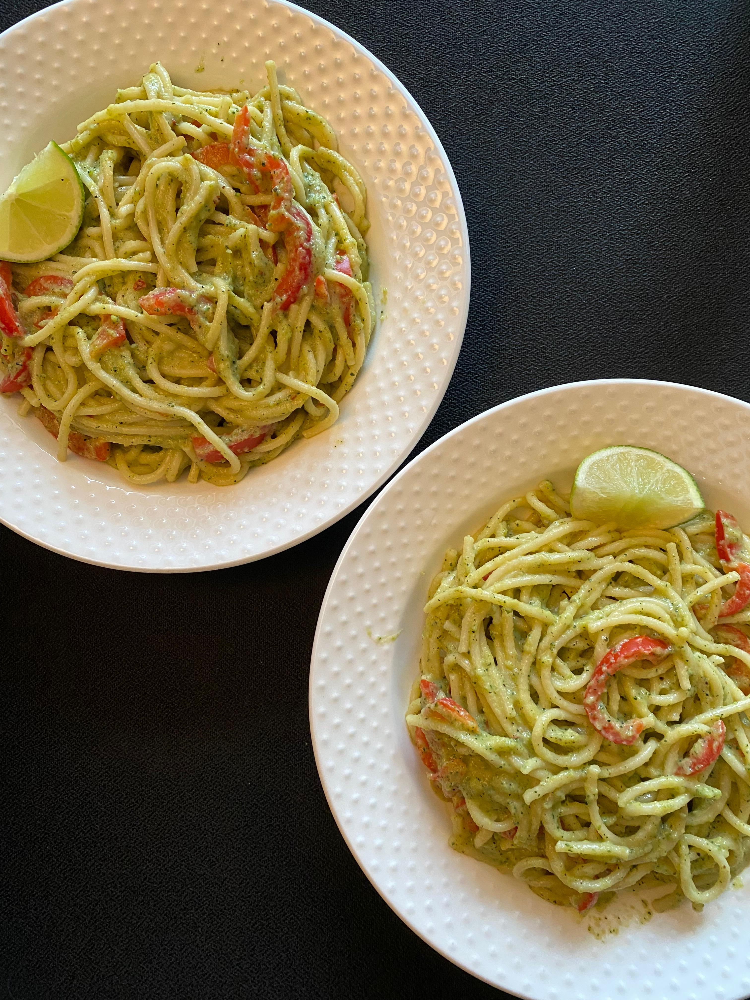
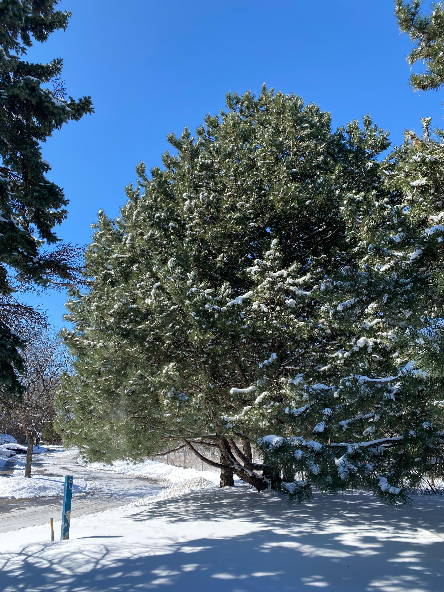
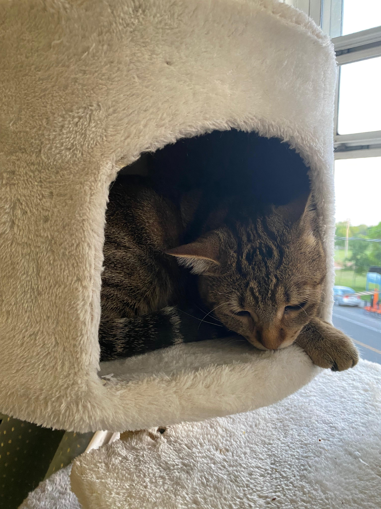

Interests
I am passionate about software development and in my free time, my interests cover a few different things—animals, cooking, and nature. I really love cats and enjoy having them around. Cooking lets me get creative, and pasta is one of my favorite things to make. I also find peace and inspiration in nature!
Cooking
Click here!
I love experimenting with new recipes and cuisines.
Nature
Click here!
I find peace in nature, with snowy landscapes being a favorite.
Animals
Click here!
I adore animals, especially cats!
Education
Toronto Metropolitan University
Bachelor of Science in Computer Science
Experience
Research Assistant
Toronto Metropolitan University
Duration
September 2024 - PresentData Scientist
Practical Applications Of Computer Science
Duration
September 2024 - PresentJunior I&IT Associate Intern
Ministry of Public and Business Service Delivery
Duration
May 2024 - August 2024Test Automation Specialist Intern
CGI